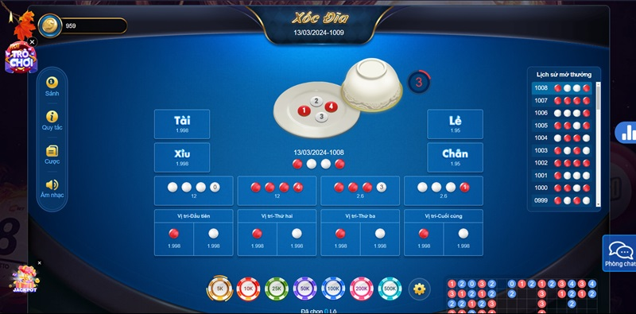
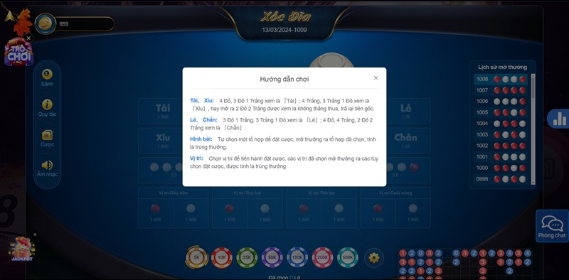
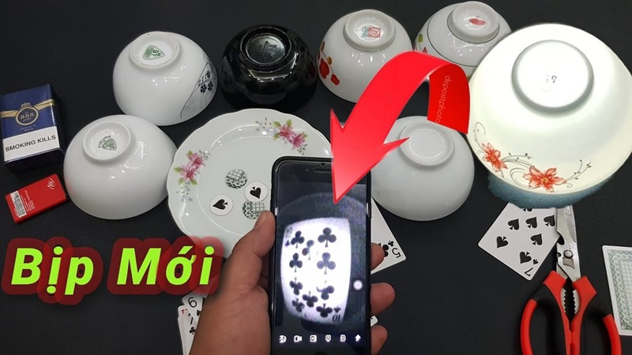

Cách chơi xóc đĩa bịp được áp dụng nhiều trong cả các ván xóc đĩa casino online và xóc đĩa ngoài đời. Hình thức chơi này đã giúp người chơi giành được nhiều bàn thắng lớn. Vậy cách chơi như thế nào mới “chuẩn không cần chỉnh” là cách chơi như thế nào?
Chúng ta hãy cùng theo dõi ngay bài viết dưới đây để thấu hiểu trò xóc đĩa này nhé!
Để tham gia trò chơi xóc đĩa bịp , trước hết bạn cần chuẩn bị một bộ đồ chơi bao gồm một cái đĩa và một cái chén, cùng với 4 quân vị. Mỗi quân vị được thiết kế với hai mặt khác nhau, mỗi mặt sơn một màu khác nhau để phân biệt.
Quy trình chơi xóc đĩa tương tự như việc đoán Tài hoặc Xỉu trong các trò chơi cá cược, trong đó người chơi đặt cược vào một trong hai kết quả có thể xảy ra sau khi quân vị được xóc.
Khi chơi trò này, có một người được chọn làm “công xóc”, nhiệm vụ của họ là xóc các quân vị bằng cách lắc đều đặn và không theo một thứ tự cố định nào. Hành động này nhằm tạo ra sự ngẫu nhiên và công bằng trong quá trình chơi.
Nếu bạn muốn tham gia trò chơi xóc đĩa trực tuyến, quy trình trở nên đơn giản hơn nhiều. Bạn chỉ cần truy cập vào một trang web hoặc ứng dụng cung cấp trò chơi xóc đĩa trực tuyến, đăng nhập vào tài khoản của mình và bắt đầu chơi mà không cần phải lo lắng về việc chuẩn bị bộ đồ chơi truyền thống như khi chơi trực tiếp.
Trò chơi xóc đĩa bịp không thể tiến hành mà không có một nhà cái, hoặc còn được gọi là chủ sớ. Vai trò của nhà cái là rất quan trọng trong quá trình chơi. Khi bắt đầu một vòng chơi, nhà cái sẽ tiến hành xóc đĩa và đặt nó xuống bàn chơi, tạo điều kiện cho các người chơi đoán kết quả.
Quy trình này diễn ra như sau:
Lúc này, khả năng phán đoán của bạn phải được thể hiện một cách nhanh chóng và chính xác nhất có thể. Điều này đòi hỏi sự tập trung và kỹ năng đánh giá tình huống của bạn để đưa ra dự đoán chính xác nhất về kết quả của vòng chơi.
Vậy chơi xóc đĩa bịp như thế nào mới nhận được thưởng lớn tại Vui123? Ngay dưới đây hãy cùng nhau tìm hiểu chi tiết về phương pháp này nhé!

Đây là một thủ thuật thông minh, vận dụng công nghệ 4.0 . Vì vị của xóc đĩa được điều khiển từ xa là một hình thức cao cấp hơn so với bình thường. Nó được dùng để đánh lừa các con bạc để nhà cái dễ dàng ăn tiền.
Khi muốn tạo được vị điều khiển từ xa, người chơi phải chuẩn bị đầy đủ dụng cụ cần thiết khi chơi xóc đĩa. Sau đó, họ sẽ gắn các thiết bị điều khiển từ xa trên 4 đồng xu. Bạn chỉ cần dùng các thiết bị đó kết nối với tivi hoặc remote điều khiển từ xa rồi chuyển mặt xu theo ý của bạn.
Các đối tượng mua bộ xóc đĩa bịp để đưa vào sử dụng. Họ sẽ tự mua bát và đĩa là hai dụng cụ không thể thiếu khi chơi xóc đĩa. Thông thường, bộ dụng cụ này phải thật khít nhau nhằm đảm bảo không xảy ra chuyện gì ngoài ý muốn.
Khi tiến hành úp bát đĩa sẽ không phát ra tiếng, nó chỉ phát ra tiếng các đồng xu va chạm nhau mà thôi. Người lắc phải chắc chắn mình lắc đủ nhanh để không ai nghe được vị xóc đĩa. Sau đó, họ có thể dùng tivi quan sát kết quả trong bát rồi dùng điều khiển đổi vị trí đồng xu.
Muốn dùng bộ dụng cụ điều khiển khi chơi xóc đĩa, người lắc phải thực hiện các bước sau:
Trên đây là hướng dẫn cách chơi xóc đĩa bịp “chuẩn không cần chỉnh” tại nhà cái Vui123 . Bạn có thể thực hiện nếu muốn giành chiến thắng nhanh hơn. Tuy nhiên, bạn không nên quá lạm dụng vào các đồ vật này bởi nó không tốt cho bạn và các người chơi khác.

Đăng Ký Vui123 Tặng 100k Từ Trang Chủ Vui123.life Trang Nhà Cái Mới Vui123 Tại Thị Trường Việt Nam